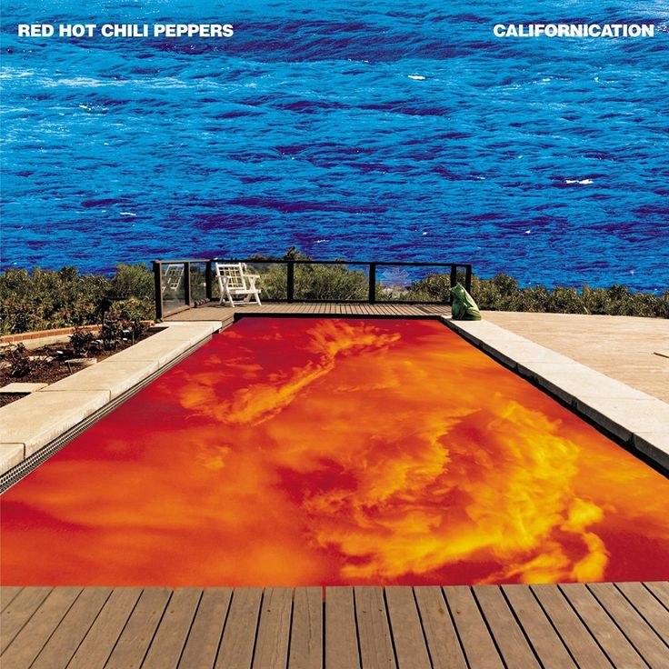
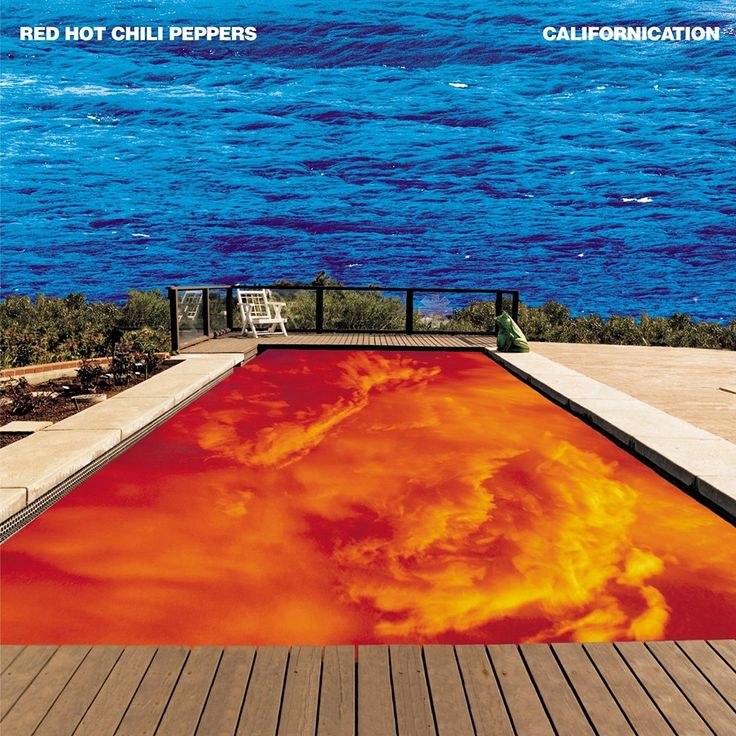

I prema Platonu i prema Plotinu glazba je u službi uspostave muzičnosti duše. Glazba se sastoji od ritma i sklada uz pomoć kojih duša oglašava u sebi ljepotu onoga mislivog. Ljepota onoga mislivog nije oprečna ljepoti onoga osjetivog. Zvučnim nasljedovanjem ljepote onoga mislivog glazba hrani sjećanje duše, radi čega se čovjek uspijeva odvraćati od stvari u kojima se vidljivo ne očituje ljepota, te ostvarivati istinit način života. Stoga glazba nedvojbeno ima oplemenjujuće djelovanje na dušu. No ona može djelovati i na suprotan način. I Platon i Plotin poistovjećuju glazbeno umijeće s umijećem opčinjavanja (goeteia): plemenito glazbeno opčinjavanje uspostavlja se kao liječništvo namijenjeno oslobođenju duše od ružnog i opakog života kakav je posljedica zavođenja glazbom.
 
